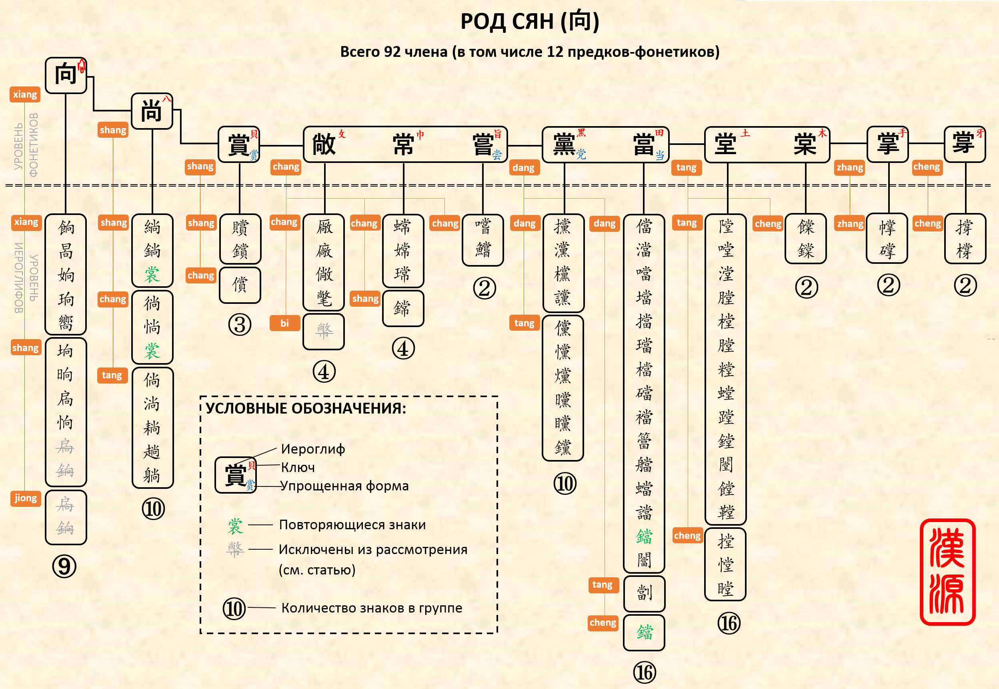

Раздел в разработке.
В структуре фонетиков можно выделить элементарные и производные фонетики. Например, иероглиф 固 содержит фонетик 古, определяющий его чтение. В свою очередь иероглиф 固 сам является фонетиком, например, для иероглифа 個. Такую картину можно представить следующей схемой:
古→固呄
古→固→個箇
Таким образом, 古 — это элементарный фонетик, поскольку не содержит в себе вложенных фонетиков, а 固 — производный фонетик.
Фонетическая семья (род) - это такая компоновка, которая учитывает взаимосвязь элементарного и произвдного фонетиков.

Данный пример фонетической семьи создан вручную. В дальнейшем планируется разработка алгоритма автоматического формирования фонетической семьи на основе баз фонетиков и Unihan. При этом пользователь сможет задавать ряд входных условий, например: только японский, только китайский, два языка и др.